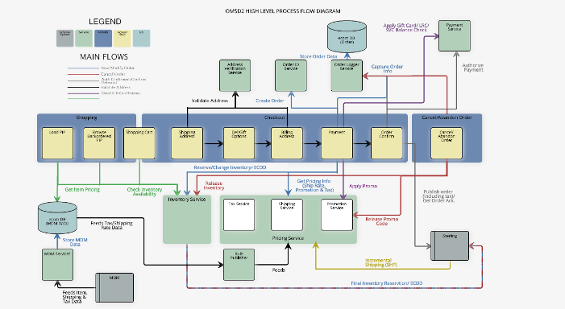

Personal Website
You are looking at it right now! This is my personal website where I show you my interests and experience. I programmed in HTML, CSS, and JavaScript.

JDOMSD2 Flowchart
Williams-Sonoma, Inc.
Williams-Sonoma, Inc.
JDOMSD2 is a high-level project in Williams-Sonoma, Inc. I built a flowchart using JSPlumb, programming in HTML, JavaScript, and CSS. This flowchart is draggable and users can hover over each component to understand its use in the JDOMSD2

My Weather App
ECS89H - Web Design
ECS89H - Web Design
I creates a desktop weather application in HTML, JavaScript, and CSS. Weather information was pulled from Yahoo Weather API.

Virtual Machine
ECS150 - Operating Systems
ECS150 - Operating Systems
My partner and I built a quarter-long virtual machine program in C++. The first addition dealt with single-threading multi-threading by implementing when the threads should sleep(wait) and when they should be ready/running. The second dealt with threads acquiring mutexes and the third dealt with shared memory + memory pools. The last addition dealt with reading a FAT16 image into the machine. We wrote functions to be able to deal with directories and files from the VM into the machine.